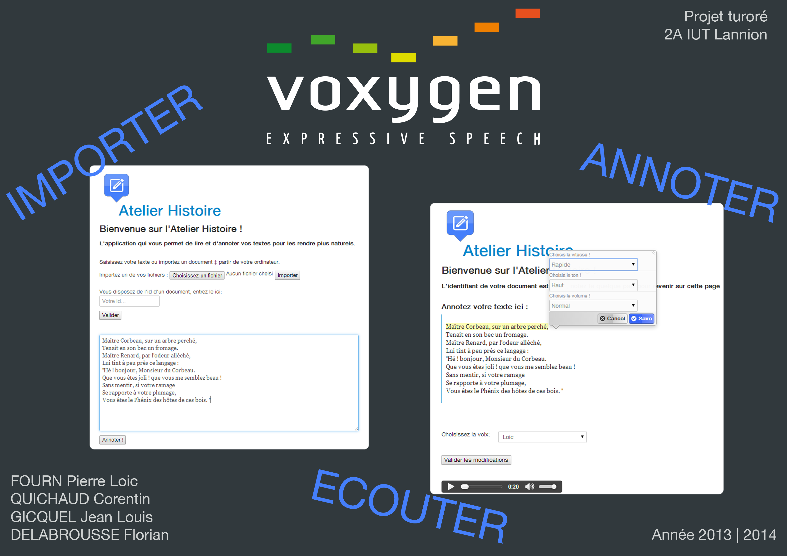
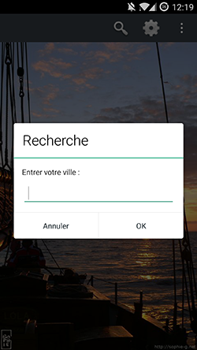
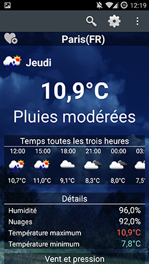
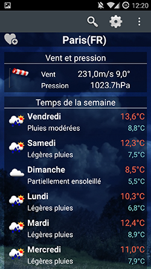
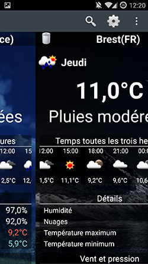

Je suis un étudiant en informatique passionné par le développement ainsi que par les technologies en général. Ma formation au sein de l'IUT de Lannion m'a permis de développer de nombreuses compétences dans le domaine de l'informatique dans des conditions optimales. J'y ai ainsi appris de nombreux langages que j'ai pu utiliser dans un projet sérieux et concret en plus d'un stage, qui m'ont en plus permis d'avoir de véritable expériences professionnelles.
Actuellement en 3e année de Licence 3 Ingénierie Informatique à l'IUP de Brest, je continue d'accroitre mes compétences dans le domaine. Je suis devenu autonome et capable de m'adapter à mon environnement de travail grâce à de solides bases en développement.
À travers ce site internet, vous allez découvrir dans un premier temps mes différentes formations. Ensuite, je vous parlerai de mes expériences professionnelles, stages, CDD et autres projets. Enfin je vous présenterai un état de mes différentes compétences acquises tout au long de mon parcours. Je vous souhaite une agréable visite.
Corentin Quichaud
15 rue kergorju
29200 Brest
06 69 36 76 26
corentin.quichaud@gmail.com
quichaciquichaud.fr
Licence 3 Ingénierie Informatique • 2014-2015
Contenu de la formation :
Java, Langage C, WEB, Réseau, Architecture, Base de données, Système
Algorithme sur les graphes, Anglais, Espagnol, Communication
DUT Informatique • 2012-2014
Contenu de la formation :
WEB (HTML, CSS, PHP), Base de données (SQL),Langage C, Java, Python
Analyse (méthodes de modélisation - Merise, UML, Modèle Relationnel, maquettage avec Visual Basic)
Gestion de projet (Gantt), MS Project
Droit des Technologies de l’Information et de la Communication, Economie, Communication et Anglais
Baccalauréat Scientifique• 2012
Acquisition d'une certaine rigueur scientifique et d'organisation dans les méthodes de travail
Lors de mes formations ainsi que de mes différents projets et stage, j'ai fait croître mes compétences. Je vous présente ici un état de mes différentes compétences.
Stage - CDD • Avril 2014 - Août 2014
Stage de deux mois et demi qui a abouti sur un CDD.
Création d'une application web (HTML/Jquery/Java) qui a pour but d'administrer les comptes extranets des adhérents et
professionnels de santé des mutuelles (plus de 800 000): Création de web services (Axis2) permettant la recherche et
la modification dans un annuaire LDAP. Création d'une servlet qui appelle ces web services. Mise en place de l'historisation des
actions réalisées sur les comptes dans une base de données (SQLite).
Création d'une deuxième application web, permettant de lister
les actions réalisées (recherche et tri multi-critères) en utilisant l'historisation effectuées dans l'autre application.
Participation au processus d'intégration interne (recette et qualification)
jusqu'à la mise en production.
Ce stage a été une expérience très enrichissante et m'as permis de mettre en oeuvres les différentes compétences apprises pour répondre aux besoins
de l'entreprise.
Consulter mon rapport de stage
Projet• Octobre 2013 - Mars 2014
Ce fut mon projet de deuxième années d'IUT, il a été proposé par l'entreprise Voxygen.
Nous étions en équipes de quatre pour l'effectuer.
Cela consistait à créer une application web utilisant la synthèse vocal. Il avait pour but d'améliorer la vocalisation d'un texte.
L'utilisateur importe son texte sur l'application, puis l'annote avec différente balise. Permettant de hausser, diminuer, accélérer... une voix.
Lors de ce projet j'ai utilisées de PHP, HTML, CSS, WSDL.
Ce projet nous a fait découvrir l'entreprise Voxygen et nous a permis d'en apprendre beaucoup dans la gestion de projet.

Projet• Octobre 2014 - Décembre 2014
Ce projet a été proposé par l'UBO de Brest, il consistait à la création d’une application Android météo. Nous l'avons réalisé en binôme. Nous avons développé l'application en Java sur le SDK Android sur Eclipse.
Cette application dispose aussi d'un système de ville favorite, pour passer d'une ville favorite à une autre cela se fait avec un glisser du doigt.
Voici des photos de l'application:



